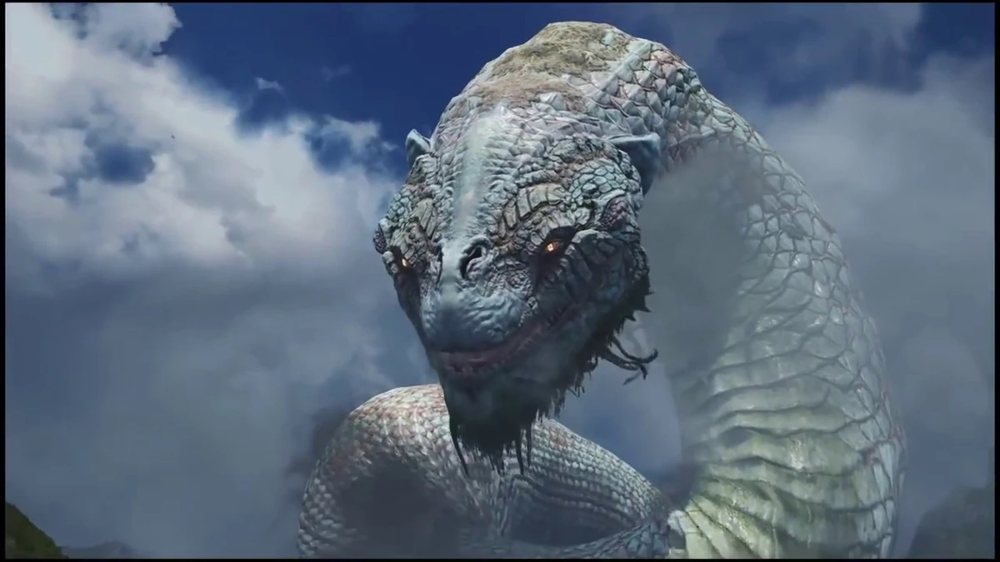

Jörmungandr
 De acordo com Freya, a Serpente apareceu misteriosamente um dia no Lago dos Nove. Em um ponto, ele lutou contra Thor em uma batalha que foi sentida em todos os Nove Reinos, terminando em um impasse. Ele permaneceu no lago desde então, crescendo tanto que é capaz de cercar toda Midgard.
Quando os Jötnar foram caçados por Thor e os outros Aesir, os Jötnar restantes fugiram para sua terra natal, tornando Jörmungandr e "o Guardião" os últimos Gigantes em Midgard. Ele passa o tempo dormindo e protegendo o Templo de Tyr. Um chifre próximo pode ser usado para invocá-lo.
Segundo Mimir,
a profecia de Ragnarök prediz que a serpente e Thor lutarão novamente. Na luta, Thor atingirá Jörmungandr com tanta força que estilhaça Yggdrasil e o manda de volta no tempo para um período bem antes de seu nascimento (explicando sua aparição repentina no lago).
Jörmungandr encontra Kratos e Atreus pela primeira vez no Lago dos Nove,
saindo dela e fazendo com que o nível da água caia. Ele fala brevemente com o par (embora eles não possam entendê-lo) antes de retornar ao seu sono.
Após Kratos e Atreus adquirirem a cabeça de Mimir (a única pessoa "viva" que conhece sua língua), eles convocam a serpente para saber como chegar a Jötunheim.
A primeira coisa que Jörmungandr vê ao acordar é uma grande estátua de Thor, a quem ele despreza com paixão. Ele destrói a estátua, arrancando a metade superior e engolindo-a. Ele então avista Kratos e Atreus na ponte de viagem do reino, reconhecendo Mimir quando ele se apresenta.
Ele fica visivelmente zangado quando Mimir identifica erroneamente os dois como amigos de Odin, mas se acalma quando Mimir se corrige apressadamente. Depois de saber de suas intenções, ele concorda em ajudá-los a chegar a Jötunheim e realinhar a ponte para garantir que eles estejam indo na direção certa.
Quando Kratos traz um Atreus doente para a casa de Freya com Mimir, eles ouvem a buzina na ponte soando à distância, notando que alguém chamou a Serpente. A identidade do misterioso chamador ainda permanece desconhecida.
Kratos, Atreus e Mimir mais tarde percebem que a estátua de Thor pode conter o segundo olho de Mimir,
que eles precisam para chegar a Jötunheim. Quando Mimir pergunta a ele sobre a estátua, Jörmungandr responde que acha que ainda pode estar em seu estômago e relutantemente permite que entrem em sua boca para procurá-la. Enquanto eles procuram dentro de sua barriga, ele é atacado por Baldur, expulsando os três próximos ao cadáver do Frost Giant Thamur.
Mais tarde,
quando sob ataque do cadáver reanimado de Thamur (cortesia de Freya), Atreus chama por ele na língua antiga e, quase imediatamente, a colossal Serpente vem em seu auxílio atacando o cadáver de Thamur, permitindo que Kratos derrote Baldur.
A serpente recua após a luta e não é mais vista.
Kratos e Mimir sugerem que é melhor deixar a Serpente sozinha para se recuperar. Atreus gritará um agradecimento à besta. O jogador não pode interagir com ele pelo resto do jogo, embora ele ainda apareça em segundo plano devido ao seu enorme tamanho.